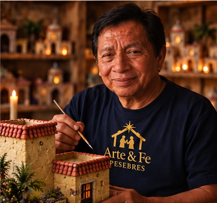
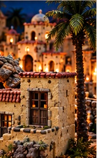

El artesano detrás
de cada pesebre
Detrás de Arte & Fe está Marcelo, un artesano ecuatoriano con más de 50 años de experiencia en el mundo del arte y las manualidades.
Su vida ha sido un constante diálogo entre la fe, la creatividad y la tradición. A lo largo de cinco décadas, ha perfeccionado técnicas y materiales para dar vida a pesebres únicos, que reflejan la riqueza cultural de nuestro país y el profundo significado espiritual de la Navidad.
Desde su taller en el Valle de los Chillos, Quito, Marcelo crea cada pesebre a mano, dedicando tiempo, paciencia y amor a los detalles que transforman cada obra en una representación viva del nacimiento de Jesús.


⌂
Nuestro propósito
Compartir la belleza del nacimiento de Jesús a través de pesebres artesanales, preservando nuestras tradiciones y generando un puente entre la fe, el arte y la cultura ecuatoriana. Cada obra busca transmitir un mensaje de esperanza, unidad y amor para los hogares de hoy y de siempre.
♰
Tradición, fe
y autenticidad
Creemos en el poder del arte para mantener viva la esencia de la Navidad. Trabajamos con procesos artesanales, materiales de calidad y un profundo compromiso con nuestras raíces, creando pesebres únicos que llevan consigo la historia, la fe y el alma del Ecuador.
❧50 añosde experiencia
🖌Arte y pinturaartesanal
⌁Materiales decalidad y durabilidad
⌂Pesebres únicosy personalizados
◇Taller en el Vallede los Chillos, Quito